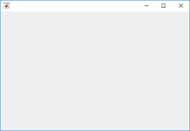
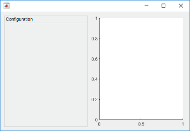
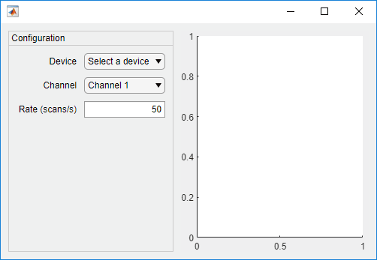
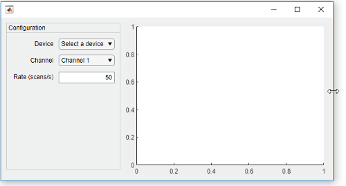
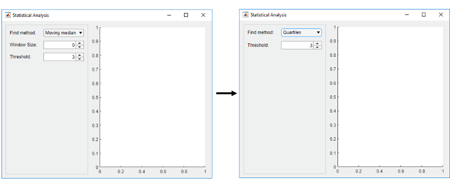

uigridlayout
Create grid layout manager
Syntax
Description
g = uigridlayoutGridLayout object. MATLAB® calls the uifigure function to create the figure. Use
a grid layout manager if you do not want to position components by setting pixel values in
Position vectors.
If you add components to the grid layout manager, but you do not specify the
Layout property of the components, then the grid layout manager adds
the components from left to right and then top to bottom.
g = uigridlayout(parent)Figure object or one of its child containers.
g = uigridlayout(___,Name,Value)GridLayout property values using one or more name-value pair
arguments. Specify the name-value pair arguments after all other arguments in any of the
previous syntaxes.
Examples
Create a figure and a grid. Then configure the grid by setting the row heights and column widths. In this case, configure a 3-by-2 grid in which the top two rows are fixed at 22 pixels, while the bottom row has a variable height. Set the left column to be 150 pixels wide, and set the right column to have a variable width. The grid fills the entire figure, but because the grid is invisible, the figure appears to be empty.
fig = uifigure('Position',[100 100 440 320]); g = uigridlayout(fig); g.RowHeight = {22,22,'1x'}; g.ColumnWidth = {150,'1x'};

Add two drop-downs, a list box, and an axes component to the grid. If you do not
specify row or column locations for the Layout property of
components, they populate the grid from left to right and top to bottom by default. In
this case, move the second drop-down (dd2) and the list box
(chanlist) to specific rows and columns by setting the
Layout property.
% Device drop-down dd1 = uidropdown(g); dd1.Items = {'Select a device'}; % Range drop-down dd2 = uidropdown(g); dd2.Items = {'Select a range'}; dd2.Layout.Row = 2; dd2.Layout.Column = 1; % List box chanlist = uilistbox(g); chanlist.Items = {'Channel 1','Channel 2','Channel 3'}; chanlist.Layout.Row = 3; chanlist.Layout.Column = 1; % Axes ax = uiaxes(g);

Set the axes to span rows 1 through 3, filling the vertical space.
ax.Layout.Row = [1 3];

When you resize the figure, the axes grow and shrink to fill the available space
that the left column does not use. The components on the left side remain fixed because
that column is defined as 150 pixels wide.

When you assign different weights to variable-width columns, the width of each column is proportional to the weight. Variable-height rows allocate space the same way.
Create a figure and a 2-by-2 grid. Then configure the row heights and the column widths. In this case, the top row is fixed at 40 pixels, while the bottom row has a variable height. Both columns have a variable width, but the second column has twice the weight of the first column. Because the grid is invisible, the figure appears to be empty.
fig = uifigure('Position',[100 100 437 317]); g = uigridlayout(fig,[2 2]); g.RowHeight = {40,'1x'}; g.ColumnWidth = {'1x','2x'};
Add a label across both columns of the top row. Then add an axes component to each column of the bottom row.
% Add title title = uilabel(g,'Text','Market Trends'); title.HorizontalAlignment = 'center'; title.FontSize = 24; title.Layout.Row = 1; title.Layout.Column = [1,2]; % Add two axes ax1 = uiaxes(g); ax2 = uiaxes(g);

Because the left column has a weight of 1, and the right column
has a weight of 2, the axes on the right use twice as much of the
horizontal space as the axes on the left. The grid maintains this ratio when you resize
the figure.
One way to arrange UI components in a panel is to create a grid in the panel.
Create a figure and a 1-by-2 grid. Then configure the column widths. In this case,
the left column is fixed at 220 pixels, while the right column has a
variable width. Because the grid is invisible, the figure appears to be empty.
fig = uifigure('Position',[100 100 500 315]); grid1 = uigridlayout(fig,[1 2]); grid1.ColumnWidth = {220,'1x'};

Add a panel and axes to grid1.
p = uipanel(grid1,'Title','Configuration'); ax = uiaxes(grid1);

Create a grid called grid2 inside the panel. Then place three
components and three labels inside grid2. The left column of
grid2 aligns the labels with the components. Since each row uses
only 22 pixels, the panel has extra space below the third row.
% Grid in the panel grid2 = uigridlayout(p,[3 2]); grid2.RowHeight = {22,22,22}; grid2.ColumnWidth = {80,'1x'}; % Device label dlabel = uilabel(grid2); dlabel.HorizontalAlignment = 'right'; dlabel.Text = 'Device'; % Device drop-down devicedd = uidropdown(grid2); devicedd.Items = {'Select a device'}; % Channel label chlabel = uilabel(grid2); chlabel.HorizontalAlignment = 'right'; chlabel.Text = 'Channel'; % Channel drop-down channeldd = uidropdown(grid2); channeldd.Items = {'Channel 1', 'Channel 2'}; % Rate Label ratelabel = uilabel(grid2); ratelabel.HorizontalAlignment = 'right'; ratelabel.Text = 'Rate (scans/s)'; % Rate edit field ef = uieditfield(grid2, 'numeric'); ef.Value = 50;

When you resize the figure, the axes grow and shrink to fill the available space
that the left column of grid1 does not use. The panel remains fixed
because that column is defined as 220 pixels wide.

Nested grids allow you to manage subsets of components. In this case, there are three grids: one grid that covers the entire figure, a second grid that manages a vertical stack of components, and a third grid that manages two buttons that are side by side at the bottom of the vertical stack.
Create a figure and a 1-by-2 grid. Then configure the column widths. In this case,
the left column is fixed at 150 pixels, while the right column has a
variable width. Because the grid is invisible, the figure appears to be empty.
fig = uifigure('Position',[100 100 500 315]); grid1 = uigridlayout(fig,[1 2]); grid1.ColumnWidth = {150,'1x'};

Create a 4-by-1 grid called grid2 inside the first column of
grid1. Then add an axes component to the second column of
grid1.
grid2 = uigridlayout(grid1,[4 1]);
grid2.RowHeight = {22,22,22,44};
ax = uiaxes(grid1);

Add three drop-downs to the first three rows of grid2.
% Routes drop-down ddRoutes = uidropdown(grid2); ddRoutes.Items = {'Route 1', 'Route 2'}; % Direction drop-down ddDirection = uidropdown(grid2); ddDirection.Items = {'Inbound', 'Outbound'}; % Time drop-down ddTime = uidropdown(grid2); ddTime.Items = {'Morning', 'Afternoon'};

Create a 1-by-2 grid called grid3 inside the last row of
grid2. Then add two buttons to grid3. Remove the
padding on the left and right edges of grid3 so that the buttons
align with the left and right edges of the drop-downs.
grid3 = uigridlayout(grid2,[1 2]); grid3.Padding = [0 10 0 10]; b1 = uibutton(grid3,'Text','Start'); b2 = uibutton(grid3,'Text','Stop');

When you resize the figure, the axes grow and shrink to fill the available space
that the left column of grid1 does not use. The components on the
left side remain fixed because that column is defined as 150 pixels
wide.

Bring child components of a scrollable grid layout into view by specifying pixel coordinates or a location name.
Create a 5-by-2 grid layout and set the Scrollable property
of the grid to 'on'. Then add a label, a table, and a panel to
the grid. Set the Scrollable property of the panel to
'off' and then add a chart to the panel.
fig = uifigure('Position',[782 497 435 311]); g = uigridlayout(fig,'Scrollable','on'); g.RowHeight = {22,40,22,22,400}; g.ColumnWidth = {400,400}; lbl = uilabel(g,'Text','Tsunamis'); lbl.Layout.Row = 2; lbl.Layout.Column = [1,2]; lbl.HorizontalAlignment = 'center'; lbl.FontSize = 28; tsunamis = readtable('tsunamis.xlsx'); tsunamis.Cause = categorical(tsunamis.Cause); t = uitable(g,'Data',tsunamis); t.Layout.Row = [3,5]; t.Layout.Column = 2; p = uipanel(g); p.Scrollable = 'off'; p.Layout.Row = [3,5]; p.Layout.Column = 1; gb = geobubble(p,tsunamis.Latitude,tsunamis.Longitude,... tsunamis.MaxHeight,tsunamis.Cause);

Scroll to a location in the grid.
scroll(g,100,-30)

Now use location names to scroll to the bottom-right corner of the grid.
scroll(g,'bottom','right')

Create a grid layout manager that automatically adjusts its row and column sizes to fit components like labels as you add them to your app, or when the font size of text-based components changes dynamically.
Create a 5-by-2 grid layout manager. Specify 'fit' for the first
column width and the first four row heights.
fig = uifigure('Position',[500 500 430 310]); g = uigridlayout(fig); g.ColumnWidth = {'fit',120,'1x'}; g.RowHeight = {'fit','fit','fit','fit','1x'};
Create a title label that spans all the columns. Then, create labels and controls
along the rows of the first and second columns. Lastly, create a table UI component in
the last column that spans rows two through five. Notice that as you add components to
the rows and columns with 'fit' height and width, the size of those
row and columns automatically adjusts to fit the new content.
patientLabel = uilabel(g,'Text','Patient:'); patientLabel.Layout.Row = 2; patientLabel.Layout.Column = 1; patientEdit = uieditfield(g); ageLabel = uilabel(g,'Text','Age:'); ageLabel.Layout.Row = 3; ageLabel.Layout.Column = 1; ageEdit = uidropdown(g,'Items',{'<20','20 - 40','40 - 60','>60'}); stateLabel = uilabel(g,'Text','State:'); stateLabel.VerticalAlignment = 'top'; stateLabel.Layout.Row = 4; stateLabel.Layout.Column = 1; stateLB = uilistbox(g,'Items',{'MA','VA','WY'}); tdata = readtable('patients.dat'); uit = uitable(g); uit.Data = tdata; uit.Layout.Row = [2 5]; uit.Layout.Column = 3;

Now, change the font name and font size of all the UI components in the grid.
set(allchild(g),'FontName','Lucida Console','FontSize',20)

Hide components within a row of a grid based on the user's selection in a drop-down menu.
Create a program file called showhide.m. In the file,
Create a 1-by-2 grid in the figure and call it
grid1. Use this grid to manage a panel and an axes component.Create a 3-by-2 grid inside the panel and call it
grid2. Use this grid to manage the layout of a drop-down menu, two spinners, and their labels.Create a callback function called
findMethodSelectedfor the drop-down menu. When the value of the drop-down menu changes to'Quartiles', the callback hides the components in a second row ofgrid2by settinggrid2.RowHeight{2}to0.
Then, run the file.
function showhide f = uifigure('Name','Statistical Analysis'); % Create grid1 in the figure grid1 = uigridlayout(f); grid1.RowHeight = {'1x'}; grid1.ColumnWidth= {220,'1x'}; % Add a panel and axes p = uipanel(grid1); ax = uiaxes(grid1); % Create grid2 in the panel grid2 = uigridlayout(p); grid2.RowHeight = {22, 22, 22}; grid2.ColumnWidth = {80,'1x'}; % Add method label and drop-down findMethodLabel = uilabel(grid2,'Text','Find Method:'); findMethod = uidropdown(grid2); findMethod.Items = {'Moving median','Quartiles'}; findMethod.ValueChangedFcn = @findMethodSelected; % Add window size label and spinner winSizeLabel = uilabel(grid2,'Text','Window Size:'); winSize = uispinner(grid2,'Value',0); % Add threshold label and spinner thresLabel = uilabel(grid2,'Text','Threshold:'); thres = uispinner(grid2,'Value',3); function findMethodSelected(src,~) method = src.Value; switch method case 'Quartiles' % Collapse the second row (hides winSize spinner) grid2.RowHeight{2} = 0; case 'Moving median' % Expand the second row grid2.RowHeight{2} = 22; end end end
When you set the Find Method to Quartiles in the app, the Window Size label and the spinner next to it become hidden.

Input Arguments
Name-Value Arguments
Specify optional pairs of arguments as
Name1=Value1,...,NameN=ValueN, where Name is
the argument name and Value is the corresponding value.
Name-value arguments must appear after other arguments, but the order of the
pairs does not matter.
Before R2021a, use commas to separate each name and value, and enclose
Name in quotes.
Example: uigridlayout('RowHeight',{100,100}) creates a grid containing
two rows that are 100 pixels in height.
Note
The properties listed here are only a subset. For a complete list, see GridLayout.
This property is read-only.
Location and size of the grid layout manager, returned as a four-element vector of the form [left bottom width height]. This table describes each element in the vector.
| Element | Description |
|---|---|
left | Distance from the inner left edge of the parent container to the left edge of the grid layout manager |
bottom | Distance from the inner bottom edge of the parent container to the bottom edge of the grid layout manager |
width | Distance between the left and right edges of the grid layout manager |
height | Distance between the bottom and top edges of the grid layout manager |
All measurements are in pixel units.
This image shows the areas defined by the Position value (orange solid
line) and the InnerPosition value (blue
dashed line) of a grid layout manager with some UI
components.

Tips
To view the list of component objects in the grid, query the
Childrenproperty of the grid. Changing the order in the list does not change the layout in the grid.You can query the
Positionproperty of a component object in the grid to determine its location and size, but the property value is not immediately updated when the component is added to the grid.